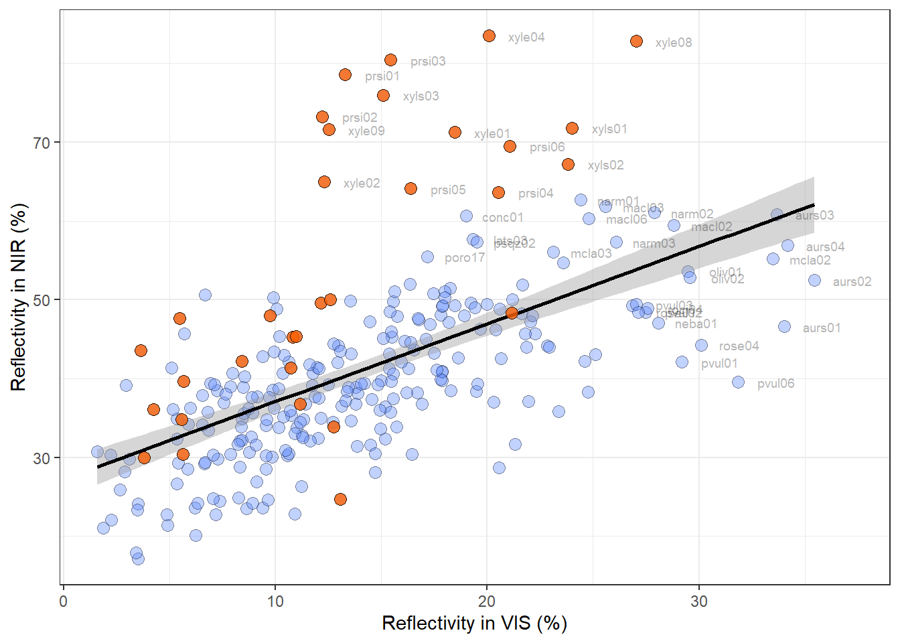
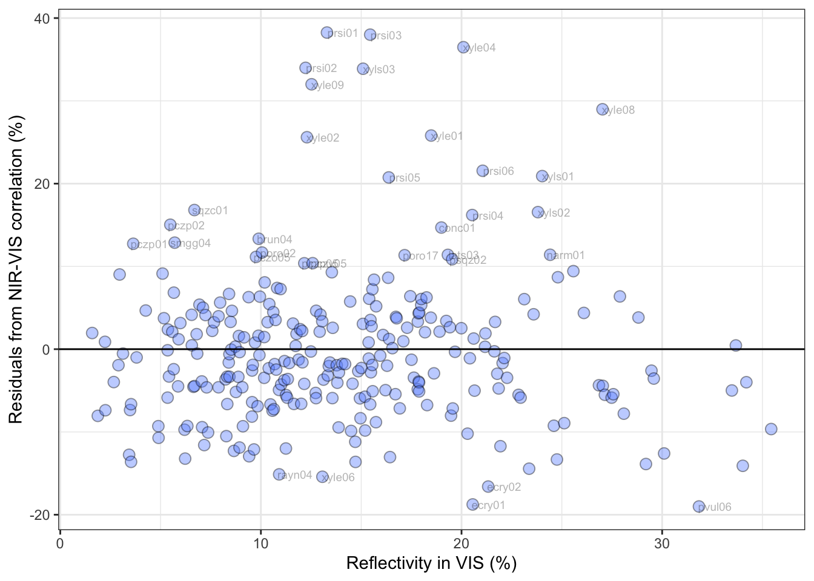
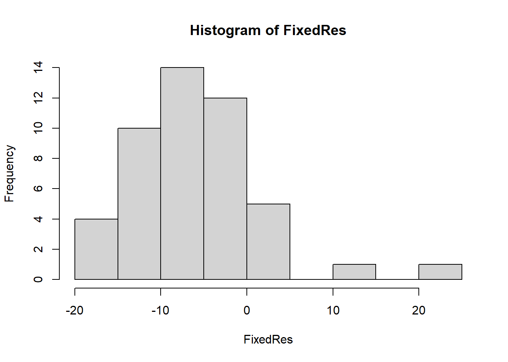
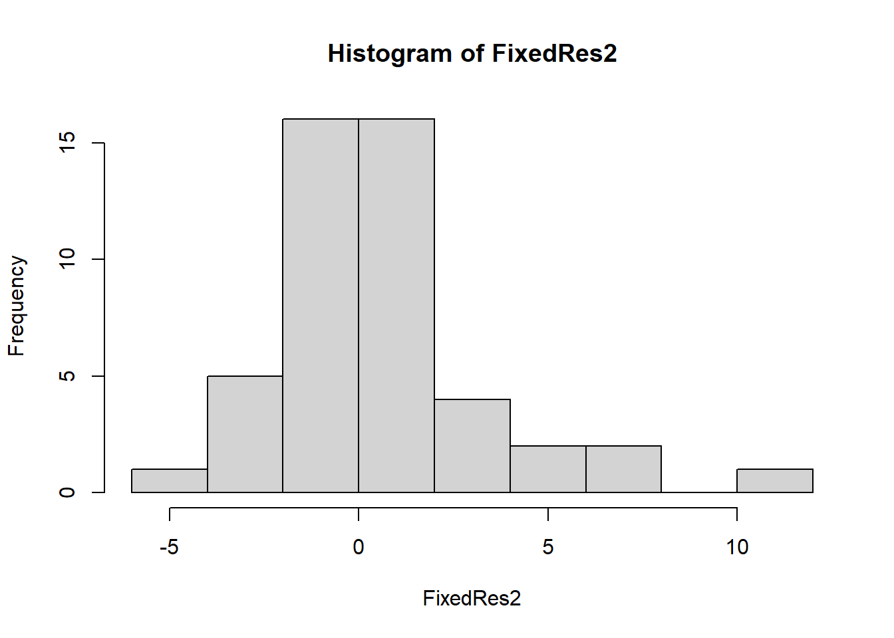
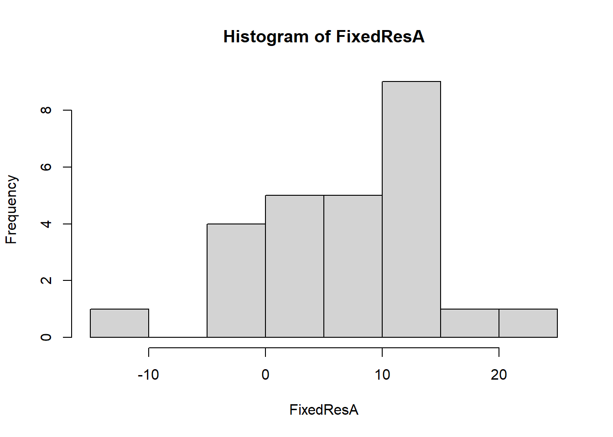
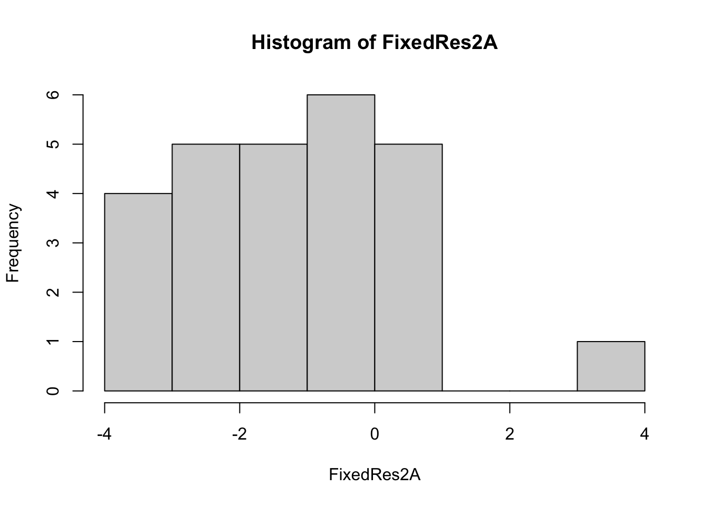

Load Libraries and Data sets
# Libraries
source(here::here("Scripts/MacroEcol_1_Libraries.R"))# Data Sets
Reflectance <- read.csv(here::here("Data/FromCode/Reflectance_PData.csv")) %>%
select(-1) %>%
as.rspec()
Transmitance <- read.csv(here::here("Data/FromCode/Transmitance_PData.csv")) %>%
select(-1) %>%
as.rspec()
theorySun <- read.csv(here::here("Data/4_SunIrradiance.csv")) %>% # Sun irradiance
as.rspec()In the field of Biophysical Ecology Reflectivity is defined as the
ratio of total reflected to total incident radiation, and is a
proportion ranging from 0 to 1 (i.e. not wavelength resolved). It is
calculating by combining the hemispherical reflectance of each beetle
and the sun irradiance in 4 steps:
Note: In the field of Physics
reflectivity corresponds to the angle-integrated reflectance (%
reflectance per nm, i.e. it is wavelength resolved), but this is not the
definition we used
1) Multiplication
We created a function to multiply the irradiance of the sun * the reflectance at each wavelength
# 1) Define the following function to find the multiplication
Find.multiplication<-function(s){
vector2<-rep("NA", length(s[ , 1]))
for( i in 2 : length(s) - 1){
for (y in 1 : length(s[ , 1])){
vector2[y] <- s[y, i] * s[y, "Sun"] # multiply each column by the last one
}
s[i] <- as.numeric(vector2)
}
return(s)
}
# 2) Apply
PrelValuesRefl <- Find.multiplication(Reflectance)
# 3) Clean up preliminary values for reflectivity
PrelValuesRefl <-
PrelValuesRefl %>%
dplyr::select (-wl, # the wavelengths were altered, eliminate
-Sun) %>% # Sun irradiance not required anymore, eliminate
mutate (wl = Reflectance$wl) %>% # add the correct wavelength column
dplyr::select(wl, everything()) %>% # set the wl column as column 1
as.rspec(.) # convert to rspec object 2) Subset
Then, we separated the data into different subsets according to the spectral band: visible (VIS), NIR or Visible+NIR (ALL)
Refl_VIS <-
PrelValuesRefl %>%
filter(wl <= 700)
Refl_NIR <-
PrelValuesRefl %>%
filter(wl >= 700)
Refl_ALL <-
PrelValuesRefl
Sun_VIS <-
theorySun %>%
filter(wl <= 700)
Sun_NIR <-
theorySun %>%
filter(wl >= 700) 3) Area under the
curve
Afterwards, we found the area under the curve for each beetle on each spectral band
# Find the AUC for the samples
# "Full" spectrum 400 to 1700 nm
Sumdf1 <- summary(Refl_ALL)
B1ALL <- Sumdf1$B1
# VIS 400 to 700 nm
Sumdf2 <- summary(Refl_VIS)
B1VIS <- Sumdf2$B1
# NIR 700 to 1700 nm
Sumdf3 <- summary(Refl_NIR)
B1NIR <- Sumdf3$B1As well as the area under the curve for the sun irradiance on each spectral band
# Find the AUC for the sun irradiance
B1SunALL <- summary(theorySun)$B1
B1SunVIS <- summary(Sun_VIS)$B1
B1SunNIR <- summary(Sun_NIR)$B1 4) Standarisation
We divided the vectors containing the AUC per species, by the AUC of the sun for each spectral range.
This step is useful to express reflectivity as the percentage of light coming from the sun, reflected by the beetle on each spectral range
Reflectivity <- data.frame(
"ind"= names(PrelValuesRefl[2:length(PrelValuesRefl)]),
"R_ALL"= B1ALL/B1SunALL,
"R_VIS"= B1VIS/B1SunVIS,
"R_NIR"= B1NIR/B1SunNIR)
head(Reflectivity)## ind R_ALL R_VIS R_NIR
## 1 abno01 24.36959 15.194950 32.37499
## 2 abno02 30.17203 17.865117 40.90967
## 3 ambl01 22.33334 2.957921 39.18562
## 4 ambl02 20.48484 8.754453 30.69513
## 5 anom01 17.25955 2.229028 30.33292
## 6 anom02 19.93132 7.888188 30.40910
The process and rationale to calculate transmissivity is similar to reflectivity. We combined the hemispherical reflectance of each beetle and the sun irradiance in 4 steps:
1) Multiplication
This function multiplies the irradiance of the sun * the reflectance at each wavelength
# 1) The function has already been defined in the previous section
# 2) Apply
PrelValuesTrans <- Find.multiplication(Transmitance)
# 3) Clean up preliminary values for reflectivity
PrelValuesTrans <-
PrelValuesTrans %>%
dplyr::select (-wl, # the wavelengths were altered, eliminate
-Sun) %>% # Sun irradiance not required anymore, eliminate
mutate (wl = Transmitance$wl) %>% # add the correct wavelength column
dplyr::select(wl, everything()) %>% # set the wl column as column 1
as.rspec(.) # convert to rspec object 2) Subset
We separated the data into different subsets according to the spectral band: visible (VIS), NIR or Visible+NIR (ALL)
Tran_VIS <-
PrelValuesTrans %>%
filter(wl <= 700)
Tran_NIR <-
PrelValuesTrans %>%
filter(wl >= 700)
Tran_ALL <-
PrelValuesTrans 3) Area under the
curve
Afterwards, we found the area under the curve for each beetle on each spectral band
# Find the AUC for the samples
# "Full" spectrum 400 to 1700 nm
Sumdf4 <- summary(Tran_ALL)
TB1ALL <- Sumdf4$B1
# VIS 400 to 700 nm
Sumdf5 <- summary(Tran_VIS)
TB1VIS <- Sumdf5$B1
# NIR 700 to 1700 nm
Sumdf6 <- summary(Tran_NIR)
TB1NIR <- Sumdf6$B1
# Use the AUC for the sun irradiance calculated in the reflectivity section. 4) Standarisation
We divided the vectors with the AUC per species, by the AUC of the sun for each spectral range.
This step is useful to express Transmissivity as the percentage of light coming from the sun, that passes through a beetle elytra on each spectral range
Transmissivity <- data.frame(
"ind"= names(PrelValuesTrans[2:length(PrelValuesTrans)]),
"T_ALL"= TB1ALL/B1SunALL,
"T_VIS"= TB1VIS/B1SunVIS,
"T_NIR"= TB1NIR/B1SunNIR) %>%
arrange(ind)
head(Transmissivity)## ind T_ALL T_VIS T_NIR
## 1 anom02 9.512246 2.7395752 15.41344
## 2 anom03 33.611240 8.8468523 55.18522
## 3 atki03 20.263098 3.8712518 34.53250
## 4 atki04 6.401844 0.4059584 11.61628
## 5 aurs03 21.665178 10.2313243 31.62811
## 6 aurs04 21.522242 10.0386596 31.52977
We assumed that all the light that is neither reflected nor absorbed by the elytra must be absorbed by it. Thus, we calculated the absorptivity as Abs = 100 - (Reflectivity + Transmissivity)
Reflect_sub <-
Reflectivity %>%
filter(ind %in% (Transmissivity$ind)) %>%
arrange(ind)Finally we created a data frame containing the three optical properties reflectvity (R), transmissivity (T) and absorptivity (A) for each beetle on each of the three spectral bands: visible (VIS= 400 to 700 nm), near infrared (NIR= 700 to 1400nm) and both combined (ALL= 400 to 1400nm)
Optical <- # A data frame with the 3 optical properties
data.frame(Reflect_sub,Transmissivity) %>%
dplyr::select(-ind.1) %>%
mutate(
A_ALL = 100 - (R_ALL + T_ALL), # Absorptivity for VIS+NIR
A_VIS = 100 - (R_VIS + T_VIS), # Absorptivity for VIS
A_NIR = 100 - (R_NIR + T_NIR) # Absorptivity for NIR
)
head(Optical)## ind R_ALL R_VIS R_NIR T_ALL T_VIS T_NIR A_ALL A_VIS A_NIR
## 1 anom02 19.93132 7.888188 30.40910 9.512246 2.7395752 15.41344 70.55643 89.37224 54.177463
## 2 anom03 14.52110 3.528614 24.07742 33.611240 8.8468523 55.18522 51.86766 87.62453 20.737362
## 3 atki03 13.67959 6.224032 20.15399 20.263098 3.8712518 34.53250 66.05731 89.90472 45.313505
## 4 atki04 17.16810 8.277483 24.89057 6.401844 0.4059584 11.61628 76.43006 91.31656 63.493152
## 5 aurs03 48.16895 33.673214 60.82711 21.665178 10.2313243 31.62811 30.16588 56.09546 7.544777
## 6 aurs04 46.31421 34.197305 56.89950 21.522242 10.0386596 31.52977 32.16355 55.76404 11.570735
We included this step because visible and NIR reflectivity are expected to be correlated. Considering the residuals of the correlation between these two properties is useful to explore if NIR reflectivity is driven by pressures different than the ones affecting visible (mainly thermoregulation)
Visualization
# Subsets for interesting points:
NVLabels <-
Reflectivity %>%
dplyr::filter(R_VIS > 27 |
R_NIR > 55)
Underlay <-
Reflectivity %>%
dplyr:: filter (., grepl("xyl", ind)|
grepl("prsi", ind) |
grepl("pcz", ind))
#Plot of the correlation between NIR and VIS reflectivity
ggplot(data = Reflectivity, aes(x = R_VIS, y = R_NIR))+
geom_point(size=3,alpha=0.4, pch=21,
col="black",
fill= "#648fff")+
geom_smooth (method="lm", col="black")+
theme_bw() +
xlab("Reflectivity in VIS (%)") +
ylab("Reflectivity in NIR (%)")+
geom_text(data = NVLabels,
aes(label=ind),col="black",
position = position_nudge(x = +1.8),
alpha=.3, size=2.5)+ # Add labels
geom_point(data = Underlay,
aes(x = R_VIS, y = R_NIR),
size=3,alpha=0.8, pch=21,
col="black",
fill= "#fe6100") # Add beetles with white Underlay
Extract Residuals
With a simple lm model
# Linear model
NIRVISMod1 <- lm(Reflectivity$R_NIR ~ Reflectivity$R_VIS)
export_summs(NIRVISMod1, error_format = "SE = {std.error}")| Model 1 | |
|---|---|
| (Intercept) | 27.25 *** |
| SE = 1.27 | |
| Reflectivity$R_VIS | 0.98 *** |
| SE = 0.08 | |
| N | 275 |
| R2 | 0.35 |
| *** p < 0.001; ** p < 0.01; * p < 0.05. | |
# Include Residuals in the data frame
Reflectivity$Res <- NIRVISMod1$residuals Relationship between reflectivity in NIR and the residuals:
ForResNIRPlot <-
Reflectivity %>%
dplyr::select (ind, Res, R_NIR) %>%
arrange (R_NIR)
ForResNIRPlot2 <-
ForResNIRPlot %>%
dplyr:: filter (., grepl("xyl", ind)|
grepl("prsi", ind) |
grepl("pcz", ind))
ggplot(data = ForResNIRPlot, aes(x= R_NIR ,y = Res))+
geom_point(size=3,alpha=0.4, pch=21,
col="black",
fill= "#648fff")+
geom_text(data = subset (ForResNIRPlot, Res > 10 | Res < -15),
aes(label=ind),col="black",
position = position_nudge(x = +1.8),
alpha=.3, size=2.5)+
geom_point(data = ForResNIRPlot2, aes(x= R_NIR ,y = Res),
size=3,alpha=0.8, pch=21,
col="black",
fill= "#fe6100")+
theme_bw() +
geom_hline(yintercept=0)+
xlab("Reflectivity in NIR (%)") +
ylab("Residuals from NIR-VIS correlation (%)")Relationship between reflectivity in VIS and the residuals:
ForResVISPlot <-
Reflectivity %>%
dplyr::select (ind, Res, R_VIS) %>%
arrange (R_VIS)
ggplot(data = ForResVISPlot, aes(x= R_VIS ,y = Res))+
geom_point(size=3,alpha=0.4, pch=21,
col="black",
fill= "#648fff")+
geom_text(data = subset (ForResVISPlot, Res > 10 | Res < -15),
aes(label=ind),col="black",
position = position_nudge(x = +0.8),
alpha=.3, size=2.5)+
theme_bw() +
geom_hline(yintercept=0)+
xlab("Reflectivity in VIS (%)") +
ylab("Residuals from NIR-VIS correlation (%)")
On phylogeny:
Some beetles were removed from the analysis because their position on the phylogeny is uncertain.
Reflectivity <-
Reflectivity %>%
mutate (spp = substr(ind, 1, 4)) %>%
filter (spp != "ambl"& # Amblyterus cicatricosus
spp != "psqz"& # Pseudoschizongnatus schoenfeldti
spp != "saul"& # Saulostomus villosus
spp != "sqzb"& # Schizognathus burmeisteri
spp != "sqzc"& # Schizognathus compressicornis
spp != "sqzm" # Schizognathus mesosternalis
) %>% # These species were removed. No phylogenetic info
dplyr::select (-spp)
Data frames from code:
Reflectivity contains the standardized values of
Reflectivity for 261 individuals (those from wich we had sufficient
phylogenetic information).
Optical contains the standardized values for three
optical properties Reflectivity, Transmissivity and Absorptivity for a
subset of 51 individuals form the previous sample (correspondent to the
same set of individuals analyzed in the heating rates chapter).
We created data frames that contain the optical properties, size and phylogeny name for each beetle
Size:
We measured the length between the frontal edge of the head to the end of the abdomen from calibrated photographs of the specimens.
Size <- read.csv(here::here("Data/8_Size.csv"))
Size <-
Size %>%
mutate (spp = substr(ind, 1, 4)) %>%
filter (spp != "ambl"& # Amblyterus cicatricosus
spp != "psqz"& # Pseudoschizongnatus schoenfeldti
spp != "saul"& # Saulostomus villosus
spp != "sqzb"& # Schizognathus burmeisteri
spp != "sqzc"& # Schizognathus compressicornis
spp != "sqzm" # Schizognathus mesosternalis
) %>% # These species were removed. No phylogenetic info
dplyr::select (-spp) Phylogeny name:
SppNames <- read.csv(here::here("Data/9_CodesAndSpecies.csv"))
SppNames <-
SppNames %>%
mutate (spp = substr(Ind, 1, 4)) %>%
filter (spp != "ambl"& # Amblyterus cicatricosus
spp != "psqz"& # Pseudoschizongnatus schoenfeldti
spp != "saul"& # Saulostomus villosus
spp != "sqzb"& # Schizognathus burmeisteri
spp != "sqzc"& # Schizognathus compressicornis
spp != "sqzm" # Schizognathus mesosternalis
) %>% # These species were removed. No phylogenetic info
dplyr::select (-spp) %>%
arrange(Ind)
Reflectivity by
individual
Consolidated file with reflectivity on each spectral band, size and phylogeny name for each beetle.
Cons1oo <-
data.frame(Reflectivity, Size, SppNames) %>%
dplyr::select(-ind.1,-Ind)The residuals can also be calculated from a model that considers phylogeny.
Reflectivity by Individual
Cons1 <- Cons1ooPhylogeny (multiple trees)
trees <- ape::read.tree(here::here("Data/XMAS_mat2b_bst2ef_set23nn2_pinct.nwk"))Cons1agg <-
Cons1 %>%
dplyr::select (-ind) %>%# remove individual id
dplyr::select (phylogeny_name, everything ()) %>% # order columns
dplyr::group_by (phylogeny_name) %>% # group
dplyr::summarise (across(everything(), list(mean))) # mean
# Modify to make it compatible with tree tips
ConsAgg <- as.data.frame(Cons1agg) # convert to a data frame
rownames(ConsAgg) <- ConsAgg[, 1] # make species the row names
ConsAgg <- ConsAgg [,2:length(ConsAgg)] # eliminate spp name (redundant)
# Separate the data frames
# Useful for plotting in the tree
names(ConsAgg) <- c("TOT", "VIS", "NIR", "Res", "size")Make sure that the phylogeny names are consistent in the data frame and the phylogenetic trees
The MCC (Maximum clade credibility) tree used here is the BEAST MCC tree.
# read the tree
MCCtree.raw <-
ape::read.nexus(here::here("Data/xmas_mat2b_bst2ef_set23nn2_pinct_med.tre"))
# Prune extra spp in the tree, not contain in the test sample
species.MCC <- as.data.frame(unique(Cons1$phylogeny_name))
# Convert to "row names" (required for following steps)
row.names(species.MCC) <- species.MCC[, 1]
# Make sure the names in data set and tree match
temp.MCC <- name.check(MCCtree.raw, species.MCC)
temp.MCC ## [1] "OK"# This step would be neccesary if the tips had been different.
# MCCtree <- drop.tip(MCCtree.raw, temp.MCC$tree_not_data)
# Not used in our case.
# Instead, changed the name
MCCtree <- MCCtree.rawMake sure names between data and tree tips match
Cons1agg <- as.data.frame(Cons1agg)
row.names(Cons1agg) <- Cons1agg [, 1]
names(Cons1agg) <- c("phylogeny_name", "TOT", "VIS", "NIR",
"Res","size")
# Test if the species are the same
identical(
length(name.check(MCCtree, Cons1agg$phylogeny_name)$tree_not_data),
length(Cons1agg$phylogeny_name)
)## [1] TRUEPGLS in the MCC
comp_data <- comparative.data(
phy = MCCtree, data = Cons1agg,
names.col = "phylogeny_name", vcv = TRUE,
na.omit = FALSE, warn.dropped = TRUE
)Source function
note that this function has to be adapted to the data frame and model on each case
# source("12_multiple_pgls_function_G.R")# function G is for NIR residualsDefine model
MuPGLSMod0 <- NIR ~ VISRun
pglsmodFRS <- pgls(MuPGLSMod0,
data = comp_data, param.CI = 0.95, lambda = "ML")
summary(pglsmodFRS) ##
## Call:
## pgls(formula = MuPGLSMod0, data = comp_data, lambda = "ML", param.CI = 0.95)
##
## Residuals:
## Min 1Q Median 3Q Max
## -4.2281 -1.6004 0.1822 1.4793 10.2008
##
## Branch length transformations:
##
## kappa [Fix] : 1.000
## lambda [ ML] : 0.938
## lower bound : 0.000, p = 0.0062647
## upper bound : 1.000, p = 0.41689
## 95.0% CI : (0.413, NA)
## delta [Fix] : 1.000
##
## Coefficients:
## Estimate Std. Error t value Pr(>|t|)
## (Intercept) 30.38390 7.03865 4.3167 0.00008586190 ***
## VIS 1.05818 0.15959 6.6306 0.00000003604 ***
## ---
## Signif. codes: 0 '***' 0.001 '**' 0.01 '*' 0.05 '.' 0.1 ' ' 1
##
## Residual standard error: 2.806 on 45 degrees of freedom
## Multiple R-squared: 0.4942, Adjusted R-squared: 0.4829
## F-statistic: 43.97 on 1 and 45 DF, p-value: 0.00000003604Extract residuals
FixedRes <- pglsmodFRS$residuals
hist(FixedRes)
FixedRes2 <- pglsmodFRS$phyres
hist(FixedRes2)
Cons1agg$FRS <- FixedRes
Cons1agg$FRS2 <- FixedRes2The residuals can also be calculated from a model that considers phylogeny.
Absorptivity by Individual
Cons1A <- read.csv(here::here("Data/FromCode/ConsolidatedAbsoptivityInd.csv"))[-1]Phylogeny (multiple trees)
trees <- ape::read.tree(here::here("Data/XMAS_mat2b_bst2ef_set23nn2_pinct.nwk"))Cons1aggA <-
Cons1A %>%
dplyr::select (-ind, -contains("R_"), -contains("T_")) %>%# remove individual id
dplyr::select (phylogeny_name, everything()) %>% # order columns
dplyr::group_by (phylogeny_name) %>% # group
dplyr::summarise (across(everything(), list(mean))) # mean
# Modify to make it compatible with tree tips
ConsAggA <- as.data.frame(Cons1aggA) # convert to a data frame
rownames(ConsAggA) <- ConsAggA[, 1] # make species the row names
ConsAggA <- ConsAggA [,2:length(ConsAggA)] # eliminate spp name (redundant)
# Separate the data frames
# Useful for plotting in the tree
names(ConsAggA) <- c("size", "ALL", "VIS", "NIR")Make sure that the phylogeny names are consistent in the data frame and the phylogenetic trees
The MCC (Maximum clade credibility) tree used here is the BEAST MCC tree.
# read the tree
MCCtree.raw <-
ape::read.nexus(here::here("Data/xmas_mat2b_bst2ef_set23nn2_pinct_med.tre"))
# Prune extra spp in the tree, not contain in the test sample
species.MCC.A <- as.data.frame(unique(Cons1A$phylogeny_name))
# Convert to "row names" (required for following steps)
row.names(species.MCC.A) <- species.MCC.A[, 1]
# Make sure the names in data set and tree match
temp.MCC.A <- name.check(MCCtree.raw, species.MCC.A)
temp.MCC.A## $tree_not_data
## [1] "Anoplognathus_abnormis" "Anoplognathus_aeneus" "Anoplognathus_boisduvalii" "Anoplognathus_brevicollis"
## [5] "Anoplognathus_daemeli" "Anoplognathus_flavipennis" "Anoplognathus_mcalpinei" "Anoplognathus_montanus"
## [9] "Anoplognathus_multiseriatus" "Anoplognathus_nebulosus" "Anoplognathus_olivieri" "Anoplognathus_pindarus"
## [13] "Anoplognathus_punctulatus" "Anoplognathus_rhinastus" "Anoplognathus_rothschildti" "Anoplognathus_rugosus"
## [17] "Anoplognathus_suturalis" "Anoplognathus_velutinus" "Anoplognathus_viridiaeneus" "Anoplostethus_roseus"
## [21] "Mimadoretus_niveosquamosus"
##
## $data_not_tree
## character(0)# This step is necessary because the tips are different.
MCCtreeA <- drop.tip(MCCtree.raw, temp.MCC.A$tree_not_data)Make sure names between data and tree tips match
Cons1aggA <- as.data.frame(Cons1aggA)
row.names(Cons1aggA) <- Cons1aggA [, 1]
names(Cons1aggA) <- c("phylogeny_name", "size", "TOT", "VIS", "NIR")
# Test if the species are the same
identical(
length(name.check(MCCtreeA, Cons1aggA$phylogeny_name)$tree_not_data),
length(Cons1aggA$phylogeny_name)
)## [1] TRUEPGLS in the MCC
comp_dataA <- comparative.data(
phy = MCCtreeA, data = Cons1aggA,
names.col = "phylogeny_name", vcv = TRUE,
na.omit = FALSE, warn.dropped = TRUE
)Source function
note that this function has to be adapted to the data frame and model on each case
# source("12_multiple_pgls_function_G.R")# function G is for NIR residualsDefine model
MuPGLSMod0A <- NIR ~ VISRun
pglsmodFRSA <- pgls(MuPGLSMod0A,
data = comp_dataA, param.CI = 0.95, lambda = "ML"
)
summary(pglsmodFRSA) ##
## Call:
## pgls(formula = MuPGLSMod0A, data = comp_dataA, lambda = "ML",
## param.CI = 0.95)
##
## Residuals:
## Min 1Q Median 3Q Max
## -3.8626 -2.4695 -1.3236 -0.4063 3.8318
##
## Branch length transformations:
##
## kappa [Fix] : 1.000
## lambda [ ML] : 0.843
## lower bound : 0.000, p = 0.020639
## upper bound : 1.000, p = 0.2733
## 95.0% CI : (0.218, NA)
## delta [Fix] : 1.000
##
## Coefficients:
## Estimate Std. Error t value Pr(>|t|)
## (Intercept) -78.29460 12.58755 -6.2200 0.000001988637 ***
## VIS 1.34734 0.14079 9.5698 0.000000001152 ***
## ---
## Signif. codes: 0 '***' 0.001 '**' 0.01 '*' 0.05 '.' 0.1 ' ' 1
##
## Residual standard error: 2.213 on 24 degrees of freedom
## Multiple R-squared: 0.7924, Adjusted R-squared: 0.7837
## F-statistic: 91.58 on 1 and 24 DF, p-value: 0.000000001152Extract residuals
FixedResA <- pglsmodFRSA$residuals
hist(FixedResA)
FixedRes2A <- pglsmodFRSA$phyres
hist(FixedRes2A)
Cons1aggA$FRS <- FixedResA
Cons1aggA$FRSP <- FixedRes2A Reflectivity by
individual
Consolidated file with reflectivity on each spectral band, size and phylogeny name for each beetle.
write.csv(Cons1oo, here::here("Data/FromCode/ConsolidatedReflectivityInd.csv")) Absorptivity by
individual
Consolidated file with absorptivity on each spectral band, size and phylogeny name for each beetle.
Cons2oo <-
Cons1oo %>%
filter(ind %in% (Optical$ind)) %>% # Subset the reflectivity set
arrange(ind) %>%
dplyr::select(size, phylogeny_name) %>% # Keep only the size and phylogeny name
bind_cols(. , Optical) %>% # join with the 'Optical' Data frame
dplyr::select(ind, everything()) # rearrange the column order
write.csv(Cons2oo, here::here("Data/FromCode/ConsolidatedAbsoptivityInd.csv")) Reflectivity by
species
Consolidated file with reflectivity on each spectral band including NIR residuals corrected by phylogeny, size and phylogeny name for each species.
write.csv(Cons1agg, here::here("Data/FromCode/ConsolidatedReflectivitySpp.csv")) Absorptivity by
species
Consolidated file with absorptivity on each spectral band including NIR residuals corrected by phylogeny, size and phylogeny name for each species.
write.csv(Cons1aggA, here::here("Data/FromCode/ConsolidatedAbsorptivitySpp.csv"))